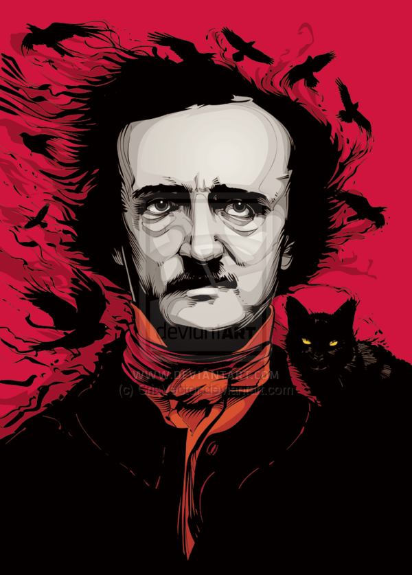

Edgar Allan Poe (19 de enero de 1809, 7 de octubre de 1849) fue un escritor, poeta, crítico y periodista romántico estadounidense, generalmente reconocido como uno de los maestros universales del relato corto, del cual fue uno de los primeros practicantes en su país. Fue renovador de la novela gótica, recordado especialmente por sus cuentos de terror. Considerado el inventor del relato detectivesco, contribuyó asimismo con varias obras al género emergente de la ciencia ficción. Por otra parte, fue el primer escritor estadounidense de renombre que intentó hacer de la escritura su modus vivendi, lo que tuvo para él lamentables consecuencias.
Fue bautizado como Edgar Poe en Boston, Massachusetts, y sus padres murieron cuando era niño. Fue recogido por un matrimonio adinerado de Richmond, Virginia, Frances y John Allan, aunque nunca fue adoptado oficialmente. Pasó un curso académico en la Universidad de Virginia y posteriormente se enroló, también por breve tiempo, en el ejército. Sus relaciones con los Allan se rompieron en esa época, debido a las continuas desavenencias con su padrastro, quien a menudo desoyó sus peticiones de ayuda y acabó desheredándolo. Su carrera literaria se inició con un libro de poemas, Tamerlane and Other Poems (1827).
La figura del escritor, tanto como su obra, marcó profundamente la literatura de su país y puede decirse que de todo el mundo. Ejerció gran influencia en la literatura simbolista francesa8 y, a través de ésta, en el surrealismo.
Poe hizo incursiones asimismo en campos tan heterogéneos como la cosmología, la criptografía y el mesmerismo. Su trabajo ha sido asimilado por la cultura popular a través de la literatura, la música, tanto moderna como clásica, el cine.
Murió el 7 de octubre de 1849, en la ciudad de Baltimore, cuando contaba apenas cuarenta años de edad. La causa exacta de su muerte nunca fue aclarada. Se atribuyó al alcohol, a congestión cerebral, cólera, drogas, fallo cardíaco, rabia, suicidio, tuberculosis y otras causas.7